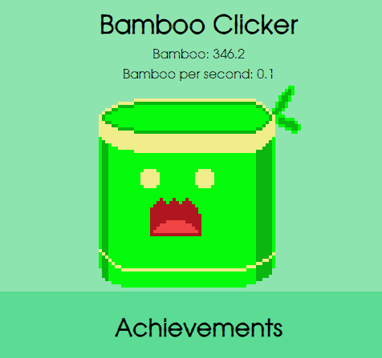

Bamboo Clicker
- Technologies used: JavaScript, CSS, HTML, Piskel
- Summary: Fully written from scratch bamboo clicker game made in JavaScript. It has fully working shop, achievements, upgrades as well as save system, to keep players progress. All graphics were drawn by me. It is still in development as I'm trying to add more features and content